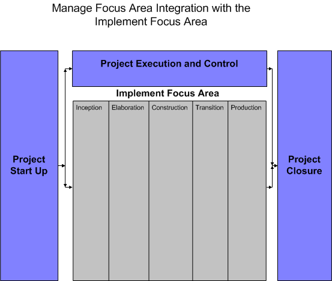
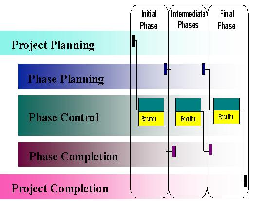

OUM |
PJM 2.6.1 to OUM Manage Mapping Document |
||
Method Navigation |
Current Page Navigation |
||
|
|
||||||||
This document provides a mapping of PJM 2.6.1 to the OUM Manage tasks. This document can be used for the following situations:
This document contains the following sections:
The integration of the Manage focus area with the Implement Focus Area is illustrated below:

In general, the Manage Project Start Up phase is conducted prior to the first phase of the Implement focus area. The Manage Execution and Control phase runs concurrently with the Implement focus area phases, and the Project Closure phase begins once the project execution is concluded.
The following is an illustration of how PJM 2.6.1 was integrated with the execution method:

In contrast to how OUM Manage is integrated with the Implement focus area, PJM 2.6.1 included the Project Planning tasks directly in the first phase of the delivery method.
In addition,PJM 2.6.1 documented the phase lifecycles explicitly through the phase start up, phase control, and phase completion tasks. The phase lifecyclcles were included in all of the delivery phases. OUM Manage does not explicitly document the phase lifecycles but instead includes all the execution and control tasks in the Project Execution and Control phase. Although some of these tasks are recommended to be executed during key milestones, such as phase start up or increment completion, they are not specifically documented in the method material.
In PJM 2.6.1, the Project Completion tasks were performed as the last activity of the final delivery phase rather than in a separate phase as in OUM Manage.
Phase |
PJM 2.6.1 Task | OUM Manage Task |
|---|---|---|
Project Planning |
||
A |
WM.010.1 Define Work Management Strategies | WM.020 Develop Work Management Execution and Control Processes and Policies |
A |
WM.020.1 Establish Workplan | WM.010 Develop Baseline Project Workplan |
A |
WM.030.1 Establish Finance Plan | FM.010 Refine Project Budget FM.020 Develop Financial Management Plan |
Phase Planning |
||
B |
WM.010.2 Define Work Management Strategies | WM.020 Develop Work Management Execution and Control Processes and Policies |
B |
WM.020.2 Establish Workplan | WM.010 Develop Baseline Project Workplan |
B |
WM.030.2 Establish Finance Plan | FM.010 Refine Project Budget FM.020 Develop Financial Management Plan |
Phase Control |
||
C |
WM.040 Workplan Control | WM.030 Manage Project Workplan |
C |
WM.050 Financial Control | FM.040 Manage Project Finances |
Phase |
PJM 2.6.1 Task | OUM Manage Task |
|---|---|---|
Project Planning |
||
A |
QM.010.1 Define Quality Management Procedures | QM.020 Develop and Document Quality Control and Reporting Process |
Phase Planning |
||
B |
QM.010.2 Define Quality Management Procedures | QM.020 Develop and Document Quality Control and Reporting Process |
Phase Control |
||
C |
QM.020 Quality Review | QM.040 Manage Quality Control |
C |
QM.030 Quality Audit | QM.050 Perform Quality Assurance |
C |
QM.040 Quality Measurement | QM.040 Manage Quality Control |
C |
QM.045 Support Healthcheck | QM.050 Perform Quality Assurance |
Phase Completion |
||
D |
QM.050.1 Perform Quality Assessment | QM.060 Conduct Post-Production Quality Review |
Project Completion |
||
E |
QM.050.2 Perform Quality Assessment | QM.060 Conduct Post-Production Quality Review |

Copyright © 2006, 2016, Oracle and/or its affiliates. All rights reserved.